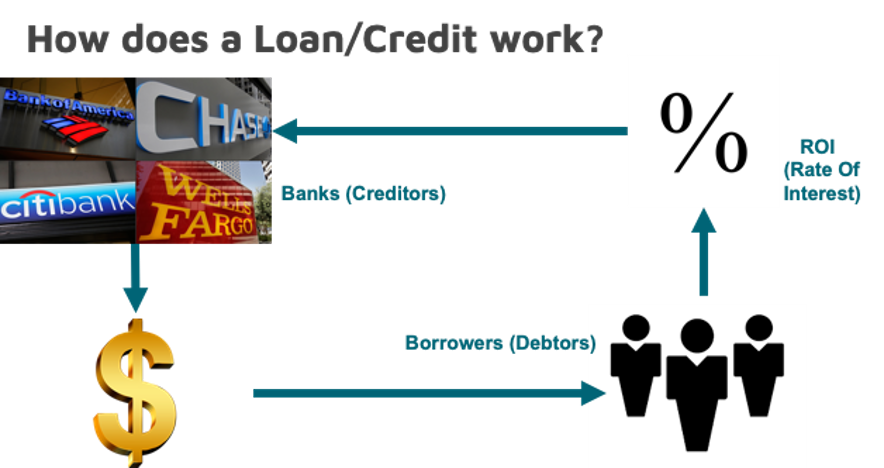

Project Overview
In this project, we have calculated the estimated Expected Loss/Expected Credit Loss that Lending Club institution would incur based on the consumer loans lent out by them. We have built Probability of Default (PD), Loss Given Default (LGD) and Exposure at Default (EAD) models and combined them to calculate Expected Loss of the entire portfolio (Lending Club).
Project Details
- Project Category:Data Science
- Language:Python
- Tools:Jupyter Notebook
- URL:Credit Risk